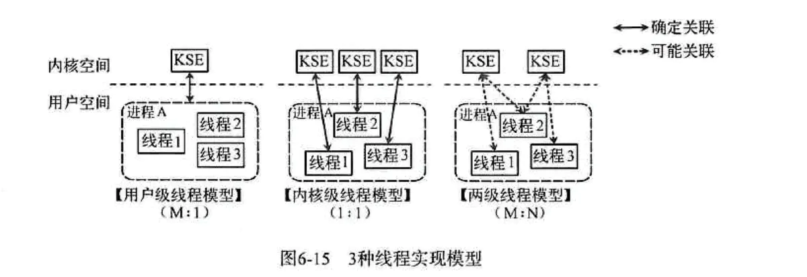

线程的实现模型主要有3种：内核级线程模型、用户级线程模型、混合型线程模型。它们之间最大的区别在于线程与内核调度实体KSE（Kernel Scheduling Entity）之间的对应关系上。所谓的内核调度实体KSE就是指可以被操作系统内核调度器调度的对象实体，有些地方也称其为内核级线程，是操作系统内核的最小调度单元。
内核级线程模型（一对一）
用户线程与KSE是1对1关系（1:1）。大部分编程语言的线程库（如Linux的pthread、Java的java.lang.Thread、C++的std::thread等）都是对操作系统的线程（内核级线程）的一层封装，创建出来的每个线程与一个不同的KSE静态关联，因此其调度完全由OS调度器来做。这种方式实现简单，直接借助OS提供的线程能力，并且不同用户线程之间一般也不会相互影响。但其创建、销毁以及多个线程之间的上下文切换等操作都是直接由OS层亲自来做，在需要使用大量线程的场景下对OS的性能影响会很大。
用户及线程模型（多对一）
用户线程与KSE是多对一关系（M:1）。这种线程的创建、销毁以及多个线程之间的协调等操作都是由用户自己实现的线程库来负责，对OS内核透明，一个进程中所有创建的线程都与同一个KSE在运行时动态关联。现在有许多语言实现的协程基本上都属于这种方式。这种实现方式相比内核级线程可以做的很轻量级，对系统资源的消耗会小很多，因此可以创建的数量与上下文切换所花费的代价也会小很多。但该模型有个致命的弱点，如果我们在某个用户线程上调用阻塞式系统调用（如用阻塞方式read网络IO），那么一旦KSE因阻塞被内核调度出CPU的话，剩下的所有对应的用户线程全都会变为阻塞状态（整个进程挂起）。
所以这些语言的协程库会把自己一些阻塞的操作重新封装为完全的非阻塞形式，然后在以前要阻塞的点上，主动让出自己，并通过某种方式通知或唤醒其他待执行的用户线程在该KSE上运行，从而避免了内核调度器由于KSE阻塞而做上下文切换。这样整个进程也不会被阻塞了。
混合型线程模型（多对多）
用户线程与KSE是多对多关系（M:N）。这是实现综合了前两种模型的优点，为一个进程中创建多个KSE，并且线程可以与不同的KSE在运行时进行动态关联，当某个KSE由于其上工作线程的阻塞操作被内核调度出CPU时，当前与其关联的其余用户线程可以重新与其他KSE建立关联关系。当然这种动态关联机制的实现很复杂，也需要用户自己去实现。
Go语言中的并发就是使用的这种实现方式，Go为了实现该模型自己实现了一个运行时调度器来负责Go中的“线程”与KSE的动态关联。此模型有时也被称为两级线程模型，即用户调度器实现用户线程到KSE的调度，内核调度器实现KSE到CPU上的调度。
三种模型的示意图如下：
